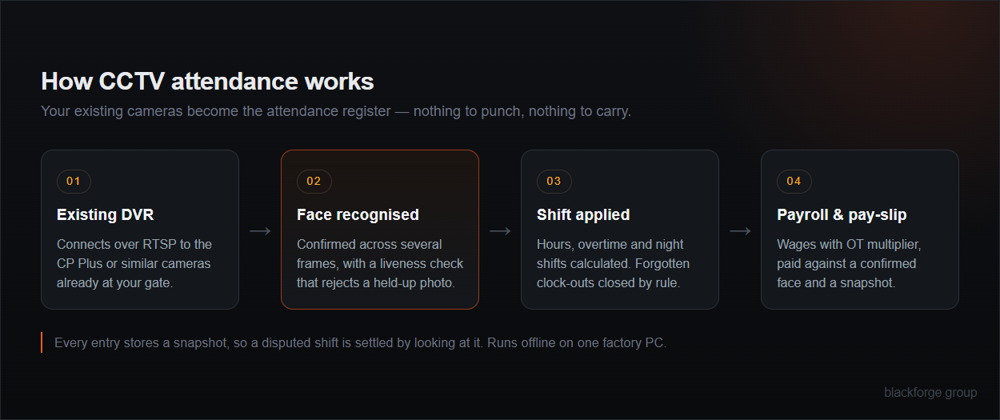

No punching machine. No cards to lose. No fingerprint scanner for eighty pairs of dusty hands. Your workers walk past the camera at the gate and the day is marked — then shifts, overtime, payroll and gate records follow automatically.
Cards get shared. Fingerprint readers refuse dusty, wet or worn hands and hold up a queue at shift change. Registers get filled in from memory at the end of the week, and by then nobody can prove who worked the overtime that just went onto the wage bill.
The camera at your gate already sees every person who walks in. This turns that footage into the attendance register — with a photo attached to every entry, so a disputed shift is settled by looking at it.
A guided scan captures each worker's face in about half a minute. Enrolment is explicit — a person is added deliberately, never by being filmed.
Recognition confirms across several frames, with a liveness check that rejects a photo held up to the lens. A snapshot is stored with every entry.
Shift rules turn the day into hours and overtime, and payroll produces the pay-slip. No register, no recall, no argument.
One system on one factory PC — not four subscriptions that don't talk to each other.
Marks in and out from your CCTV or a webcam. Confirms over several frames, runs a passive liveness check against photo spoofing, and stores a snapshot with every single entry.
Connects over RTSP to CP Plus and similar DVRs already installed in your plant. If the cameras cover the entry, you don't buy hardware — you buy software.
A person detector reads the camera feeds and places people onto a floor map of your premises by zone, so you can see at a glance how many are where — and which areas are empty when they shouldn't be.
Shift assignment, leave, overtime and early-logout approvals. Watchman shifts that cross midnight are handled properly, and a clock-out someone forgets is closed by the rule instead of billing you for it.
Monthly or hourly wages with an overtime multiplier, printable pay-slips and Excel export. Salary payments are recorded against a confirmed face with a snapshot, so a paid wage can't be disputed later.
Reads Indian number plates on the gate channel, including BH-series, and saves a snapshot of each vehicle — a record of what came in and what went out.
Inward (GRN), dispatch and material consumption with director approval, minimum-stock alerts, gate passes and ledger export. Photograph a vendor bill and it drafts the GRN for you.
Overtime, early logout and consumption requests reach the director as a message with approve and reject buttons, plus a live activity feed — so decisions don't wait for someone to reach the office.
A built-in voice assistant answers questions about today's attendance and stock from the live database, in English, Hindi or Marathi — for an owner who would rather ask than click.
The whole system runs offline on one PC inside your premises. Face data, attendance, wages and stock sit in a local database on that machine, backed up automatically every day, with an audit log of who changed what. There is no cloud account and nothing is uploaded to us or anyone else.
A person's face is personal data under India's Digital Personal Data Protection Act, 2023. Before anyone is enrolled, they must be told what is being collected and why, and must agree to it.
We build that into the rollout rather than leaving it to you: a written notice for your staff in the language they read, a consent record kept against each enrolment, and a clear route to remove someone's face data when they leave.
Enrolment is always deliberate. Nobody is added to the system by walking past a camera, and the zone monitoring counts and locates people — it does not score individuals.
This wasn't built to a spec and left on a shelf. It runs an agro-chemical factory in Akola every day — the attendance, the wages, the store and the gate — on one PC, fully offline, with the plant's own CP Plus DVR.

Usually not. If your DVR already covers the entry, the software connects to it over RTSP and uses what you have. You need one Windows PC in the factory to run it. A plain webcam works too if you'd rather have a dedicated attendance point.
A liveness check runs on every scan to reject a printed photo or a phone screen, and a match must hold across several frames. No system is perfect — which is exactly why every clock-in keeps a snapshot you can open and check.
Handled. Shifts that cross midnight, like watchman duty, are calculated correctly, and a forgotten clock-out is closed by the shift rule rather than quietly adding overtime to your wage bill.
Yes. Everything runs on the factory PC. Attendance, payroll and stock never depend on a connection — the internet is only needed if you want Telegram approvals going out to directors.
Yes, with consent. Under the DPDP Act 2023 a face is personal data, so workers must be informed and must agree before enrolment. We set up the notice and the consent record with you as part of the rollout — it isn't an afterthought.
That's the normal path. Your shifts, your wage and overtime rules, your approval chain, your gate pass format. We tailor it and deliver it tested — building custom software is what we do.
Tell us what DVR you have and how many workers. We'll show you the system recognising faces on your feed before you commit to anything.